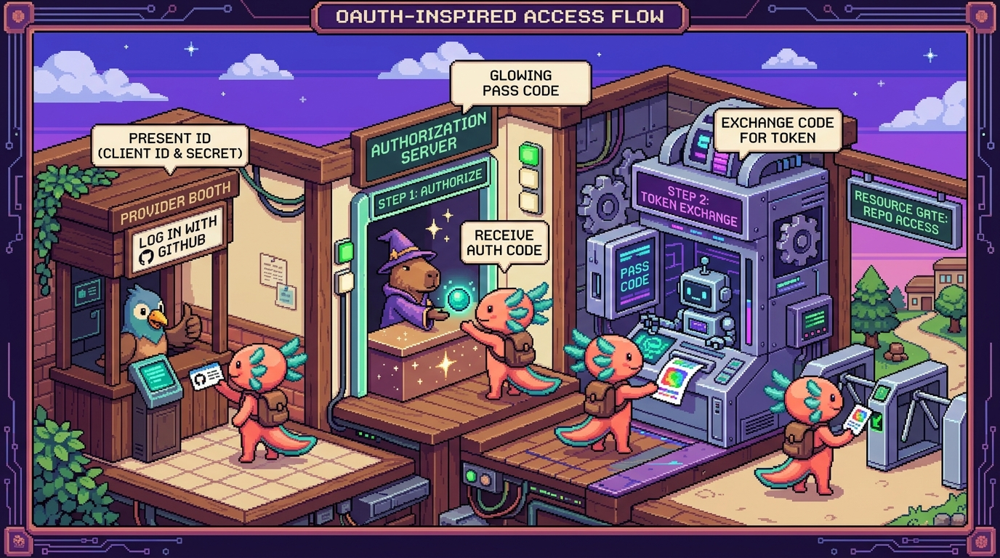

Capitulo 10 — OAuth a fondo

Hola de nuevo, soy Bit, tu ajolote guia. En el capitulo anterior viste como una app habla con otra usando peticiones HTTP. Hoy resolvemos un problema mas delicado: como dejar que una app entre a tus datos de otro servicio (GitHub, Google Drive) sin darle tu contrasena. Eso es OAuth. Tranqui: lo vamos a desarmar pieza por pieza, con calma, y veras como Faro lo usa de verdad para leer tus proyectos. Respira. Vamos paso a paso.
1. El problema que OAuth resuelve
Imagina que Faro (nuestro organizador de proyectos) quiere leer tus repositorios de GitHub para analizarlos con IA. La forma ingenua seria pedirte tu usuario y contrasena de GitHub y entrar con ellos. Eso es una pesima idea por tres razones:
- Le estarias entregando a Faro la llave maestra de TODA tu cuenta de GitHub (borrar repos, cambiar tu correo, todo).
- Faro tendria que guardar tu contrasena en algun lado. Si alguien roba esa base de datos, roba tu contrasena.
- No podrias revocar el acceso sin cambiar tu contrasena en todas partes.
OAuth nace para arreglar esto. La idea central es: en lugar de dar tu contrasena, das un permiso limitado y revocable. Tu le dices a GitHub "autorizo a Faro a leer mis repos, nada mas", y GitHub le entrega a Faro una llave temporal (un token) que solo sirve para eso.
🟦 ¿Que significa? — OAuth
Definicion simple: es un protocolo (un conjunto de reglas acordadas) que permite que una aplicacion acceda a tus datos en otro servicio sin conocer tu contrasena, usando permisos limitados. Para que sirve: para conectar apps entre si de forma segura ("Inicia sesion con Google", "Conecta tu GitHub"). Donde se usa en un repo real: en Faro/Organizer, OAuth conecta tu cuenta con GitHub y Google Drive para que la app lea tus proyectos y archivos.
💡 Tip
"OAuth" se lee "o-auth", y la version moderna que usamos hoy es OAuth 2.0. Cuando alguien dice solo "OAuth", casi siempre se refiere a la 2.0.
2. Los roles: quien es quien
OAuth es como una conversacion entre tres personajes. Si entiendes los roles, entiendes todo lo demas.
🟦 ¿Que significa? — Resource Owner (dueno del recurso)
Definicion simple: eres tu, el usuario. Los "recursos" son tus datos (tus repos, tus archivos de Drive). Para que sirve: eres quien da o niega el permiso. Sin tu "Si, autorizo", no hay acceso. Donde se usa en un repo real: en Faro, el dueno del recurso es la persona que inicia sesion para que la app analice sus proyectos.
🟦 ¿Que significa? — Client (la aplicacion)
Definicion simple: es la app que quiere acceder a tus datos. En nuestro caso, Faro. Para que sirve: es quien pide el permiso y luego usa el token para leer los datos. Donde se usa en un repo real: Faro/Organizer es el cliente cuando pide acceso a GitHub o Drive.
🟦 ¿Que significa? — Authorization Server / Resource Server (el proveedor)
Definicion simple: es el servicio que guarda tus datos y decide quien entra: GitHub, Google. A veces se separan en dos: el que autoriza (entrega tokens) y el que sirve los datos. Para principiantes piensalo como uno solo: el proveedor. Para que sirve: verifica tu identidad, te muestra la pantalla de permisos y entrega los tokens. Donde se usa en un repo real: en Faro, GitHub y Google son los proveedores; Supabase Auth orquesta la conexion.
Resumen rapido en una frase: Tu (dueno) autorizas a Faro (cliente) a leer datos que guarda GitHub (proveedor).
🔎 En tu codigo
En RachaSimple (React + TypeScript + Supabase) el login usa Supabase Auth. Ahi Supabase actua como intermediario: tu eres el dueno, RachaSimple es el cliente, y el proveedor de identidad puede ser un correo/contrasena o un proveedor OAuth como Google. La gracia es que RachaSimple nunca ve tu contrasena del proveedor.
3. El flujo de codigo de autorizacion, paso a paso
El flujo mas comun y mas seguro se llama authorization code flow (flujo de codigo de autorizacion). Suena intimidante, pero son solo 6 pasos. Vamos despacio.
🟦 ¿Que significa? — Authorization Code Flow
Definicion simple: es la "coreografia" estandar de OAuth 2.0 para apps con servidor. Primero obtienes un codigo temporal y luego, desde el servidor, lo cambias por un token. Para que sirve: para que el token (la llave real) nunca pase por el navegador del usuario, donde podria espiarse. Donde se usa en un repo real: es exactamente el flujo que Faro sigue al conectar GitHub o Google Drive.
Los 6 pasos
Paso 1 — Tu haces clic en "Conectar GitHub". Faro te redirige al proveedor (GitHub) con una URL especial que incluye quien pide (el client_id) y que permisos (los scopes).
Paso 2 — GitHub te muestra la pantalla de permisos. Esa pantalla que dice "Faro quiere leer tus repositorios. Autorizar?". Aqui tu, el dueno, decides.
Paso 3 — Tu apruebas. GitHub te devuelve al sitio de Faro (a una direccion previamente registrada, el callback) y le pega un codigo de autorizacion temporal en la URL.
Paso 4 — Faro (en el servidor) intercambia el codigo por un token. Faro toma ese codigo y, junto con su secreto, hace una peticion de servidor a servidor a GitHub para cambiarlo por un access token.
Paso 5 — GitHub entrega el token. Ahora Faro tiene una llave temporal.
Paso 6 — Faro usa el token para leer tus repos. Cada peticion a la API de GitHub lleva el token en una cabecera.
Veamoslo como diagrama mental:
Tu ──clic──> Faro ──redirige──> GitHub
│
Tu <──pantalla de permisos────────┘
│
└──apruebo──> GitHub ──codigo──> Faro (callback)
│
Faro ──codigo+secreto──> GitHub
│
Faro <──access token─────┘
│
Faro ──token──> API GitHub ──tus repos──> Faro
💡 Tip
Fijate que el token nunca aparece en la URL del navegador. Lo unico que pasa por el navegador es el codigo, que es de un solo uso y caduca en segundos. Por eso este flujo es seguro.
4. Scopes: el permiso justo y nada mas
🟦 ¿Que significa? — Scope (alcance / permiso)
Definicion simple: una etiqueta que dice que puede hacer la app. Por ejemplo
repo(leer repos) ohttps://www.googleapis.com/auth/drive.readonly(leer Drive en solo lectura). Para que sirve: para limitar el acceso al minimo necesario. Si solo necesitas leer, no pidas permiso de escribir. Donde se usa en un repo real: en Faro, al conectar Google Drive se piden scopes de solo lectura, porque la app unicamente lee tus proyectos para describirlos; nunca necesita modificarlos.
Cuando Faro arma la URL del Paso 1, incluye los scopes. Asi se ve, conceptualmente, para GitHub:
https://github.com/login/oauth/authorize
?client_id=Iv1.abc123faro
&redirect_uri=https://faro.app/api/auth/callback/github
&scope=read:user%20repo
&state=xyz789aleatorio
Cada pieza importa:
client_id: identifica publicamente a Faro ante GitHub.redirect_uri: a donde volver despues (el callback, que veremos ya).scope: los permisos pedidos, separados por espacio (%20es un espacio codificado en URL).state: un valor aleatorio anti-fraude (lo explicamos en el recuadro de seguridad).
⚠️ Cuidado
Pide solo los scopes que de verdad necesitas. Si Faro pidiera permiso de borrar repos sin razon, seria un riesgo enorme y los usuarios desconfiarian. La filosofia de Faro es de minimo privilegio: leer para analizar, nada mas.
🟦 ¿Que significa? — Principio de minimo privilegio
Definicion simple: dar a cada parte del sistema solo los permisos imprescindibles para su tarea. Para que sirve: si algo se compromete, el dano posible es menor. Donde se usa en un repo real: en Faro, conectar Drive en solo lectura es minimo privilegio en accion.
5. El callback (redirect): la puerta de regreso
🟦 ¿Que significa? — Redirect URI / Callback
Definicion simple: la direccion exacta a la que el proveedor envia al usuario de vuelta despues de aprobar. Suele ser una ruta en tu propio servidor. Para que sirve: es donde tu app recibe el codigo de autorizacion del Paso 3. Donde se usa en un repo real: en Faro (Next.js), el callback es una ruta de API del servidor, por ejemplo
/api/auth/callback/github, que recibe el codigo y dispara el intercambio.
El callback debe estar registrado de antemano en el panel del proveedor (en los ajustes de la "OAuth App" de GitHub, por ejemplo). Si la redirect_uri que envias no coincide exactamente con la registrada, el proveedor rechaza la peticion. Esto evita que un atacante redirija el codigo a su propio sitio.
Asi se ve, simplificado, una ruta de callback en Faro (Next.js + TypeScript). Es codigo de servidor, no del navegador:
// app/api/auth/callback/github/route.ts (ejecuta en el SERVIDOR)
import { NextRequest, NextResponse } from "next/server";
export async function GET(req: NextRequest) {
const { searchParams } = new URL(req.url);
const code = searchParams.get("code"); // el codigo del Paso 3
const state = searchParams.get("state"); // para validar (ver seguridad)
if (!code) {
return NextResponse.json({ error: "falta el codigo" }, { status: 400 });
}
// ... aqui validamos el state y luego cambiamos el codigo por un token
// (ese intercambio se ve en la seccion 6)
return NextResponse.redirect(new URL("/dashboard", req.url));
}
🔎 En tu codigo
En la practica, Faro delega buena parte de este baile a Supabase Auth, que ofrece el callback y guarda los tokens por ti. Pero entender que pasa por dentro te permite depurar cuando algo falla (un
redirect_urimal escrito es el error numero uno de los principiantes).
6. El intercambio: codigo por token
Este es el corazon del Paso 4. Faro toma el code y hace una peticion POST de servidor a servidor a GitHub. En esa peticion va el client_secret, que es la contrasena de la app y por eso nunca, jamas, sale del servidor.
// Sigue dentro del SERVIDOR (route.ts del callback)
const tokenRes = await fetch("https://github.com/login/oauth/access_token", {
method: "POST",
headers: {
"Content-Type": "application/json",
Accept: "application/json",
},
body: JSON.stringify({
client_id: process.env.GITHUB_CLIENT_ID, // del .env del servidor
client_secret: process.env.GITHUB_CLIENT_SECRET, // SECRETO, solo servidor
code, // el codigo de un solo uso
redirect_uri: process.env.GITHUB_REDIRECT_URI,
}),
});
const data = await tokenRes.json();
// data.access_token -> la llave para leer tus repos
// data.refresh_token -> (a veces) para renovar sin pedirte permiso de nuevo
🟦 ¿Que significa? — Access Token
Definicion simple: una cadena de texto (la "llave temporal") que prueba que tu autorizaste a la app. Caduca pronto (minutos u horas). Para que sirve: se envia en cada peticion a la API para que el proveedor te deje leer los datos. Donde se usa en un repo real: en Faro, el access token de GitHub se usa para pedir la lista de repos del usuario y analizarlos con IA.
🟦 ¿Que significa? — Client Secret
Definicion simple: una clave privada que identifica a la app de forma confidencial ante el proveedor. Es como la contrasena de Faro, no la tuya. Para que sirve: demuestra que quien intercambia el codigo es realmente Faro y no un impostor. Donde se usa en un repo real: en Faro vive en variables de entorno del servidor; nunca se incluye en el bundle (el paquete de JavaScript que tu app empaqueta y envia al navegador) que llega al usuario.
Una vez con el token, leer tus repos es un fetch normal con el token en la cabecera Authorization:
const repos = await fetch("https://api.github.com/user/repos", {
headers: {
Authorization: `Bearer ${accessToken}`, // la llave va aqui
Accept: "application/vnd.github+json",
},
}).then((r) => r.json());
🟦 ¿Que significa? — Bearer token
Definicion simple: "bearer" significa "portador". Quien porte el token puede usarlo. Por eso se cuida como una contrasena. Para que sirve: es la forma estandar de mandar el access token:
Authorization: Bearer <token>. Donde se usa en un repo real: Faro lo usa en cada llamada a la API de GitHub.⚠️ Cuidado
Como cualquiera que tenga el token puede usarlo, un token filtrado es un token robado. Por eso los tokens caducan rapido y por eso jamas se mandan al navegador en una app de servidor.
7. Refresco de token: la llave que se renueva sola
Los access tokens caducan a proposito (asi un robo dura poco). Pero pedirte permiso de nuevo cada hora seria horrible. Solucion: el refresh token.
🟦 ¿Que significa? — Refresh Token
Definicion simple: un token de larga duracion que sirve solo para pedir nuevos access tokens cuando el viejo caduca. Para que sirve: para mantener la sesion sin molestar al usuario, y sin guardar un access token eterno (que seria peligroso). Donde se usa en un repo real: en Faro, cuando el token de Google Drive caduca, el servidor usa el refresh token para conseguir uno nuevo y seguir leyendo tus archivos.
El refresco es otra peticion de servidor:
const refreshed = await fetch("https://oauth2.googleapis.com/token", {
method: "POST",
headers: { "Content-Type": "application/x-www-form-urlencoded" },
body: new URLSearchParams({
client_id: process.env.GOOGLE_CLIENT_ID!,
client_secret: process.env.GOOGLE_CLIENT_SECRET!, // SECRETO de servidor
refresh_token: storedRefreshToken, // guardado de forma segura
grant_type: "refresh_token", // "quiero refrescar"
}),
}).then((r) => r.json());
// refreshed.access_token -> nuevo access token, listo para usar
🟦 ¿Que significa? — grant_type
Definicion simple: un campo que le dice al proveedor que tipo de operacion OAuth quieres:
authorization_codepara el primer intercambio,refresh_tokenpara renovar. Para que sirve: el mismo endpoint (la direccion concreta de la API a la que llamas, aqui la URL del token) atiende varias operaciones;grant_typeaclara cual. Donde se usa en un repo real: Faro usaauthorization_codeal conectar yrefresh_tokenpara renovar el acceso a Drive.🔎 En tu codigo
En Faro, los tokens (access y refresh) se guardan en la tabla
user_connectionsde Supabase, protegida con RLS (Row Level Security, que viste en el modulo 07). Asi, cada usuario solo puede leer sus propios tokens, ni siquiera otros usuarios de la misma base.
8. Donde van los secretos: cliente vs servidor
Esta seccion es la mas importante de todo el capitulo. Lee con atencion, Bit insiste.
🟦 ¿Que significa? — Cliente vs Servidor
Definicion simple: el cliente es el codigo que corre en el navegador del usuario (cualquiera puede abrir las herramientas de desarrollo y verlo). El servidor es codigo que corre en tu maquina/hosting y el usuario nunca ve. Para que sirve: todo lo secreto (client_secret, tokens, claves de API) va en el servidor. Lo que va al navegador es publico, sin excepcion. Donde se usa en un repo real: en Faro, las rutas
/api/...de Next.js corren en el servidor; ahi viven los secretos. La interfaz React que ves es el cliente.
Veamos un contraste con tunal-digital. Ahi hay un chat que llama a la API de Claude (Anthropic). La clave de Anthropic es secreta. Si el JavaScript del navegador llamara directo a Anthropic, la clave quedaria expuesta a cualquiera. Por eso tunal-digital usa un Cloudflare Worker: el navegador habla con el Worker (servidor), y el Worker guarda la clave y habla con Anthropic.
// MAL — en el navegador (cliente). NUNCA hagas esto:
const res = await fetch("https://api.anthropic.com/v1/messages", {
headers: { "x-api-key": "sk-ant-MI-CLAVE-SECRETA" }, // 🚨 expuesta a todos
});
// BIEN — el navegador llama a TU worker; la clave vive en el servidor:
const res = await fetch("https://chat.tunal.workers.dev/api/chat", {
method: "POST",
headers: { "Content-Type": "application/json" },
body: JSON.stringify({ mensaje: "Hola, quiero una cotizacion" }),
});
// El Cloudflare Worker (servidor) agrega la x-api-key y llama a Anthropic.
🟦 ¿Que significa? — Cloudflare Worker
Definicion simple: un pequeno programa que corre en los servidores de Cloudflare, cerca del usuario. Funciona como un mini-backend sin tener que montar un servidor entero. Para que sirve: entre otras cosas, para esconder claves de API y hacer llamadas seguras a servicios externos. Donde se usa en un repo real: en tunal-digital, el Worker es el puente seguro entre el chat del navegador y la API de Claude.
⚠️ Cuidado
Mismo principio en OAuth: el
client_secrety los tokens viven en el servidor de Faro o en Supabase con RLS, nunca en el bundle de React ni en un repo publico. Esta es una regla explicita de seguridad de Faro: tokens y secretos solo en el servidor.💡 Tip
En Next.js, una variable que empieza con
NEXT_PUBLIC_SI viaja al navegador (es publica). Elclient_secretjamas debe llevar ese prefijo. Si alguna vez vesNEXT_PUBLIC_GITHUB_CLIENT_SECRET, suena la alarma roja.
9. El parametro state: tu cinturon de seguridad anti-fraude
🟦 ¿Que significa? — state (parametro anti-CSRF)
Definicion simple: un valor aleatorio que tu app genera al iniciar el flujo y verifica al recibir el callback. Si no coincide, se rechaza. Para que sirve: evita un ataque llamado CSRF (Cross-Site Request Forgery, "falsificacion de peticion entre sitios"), donde alguien intenta colarte un codigo de autorizacion que tu nunca pediste. Donde se usa en un repo real: en Faro, el
statese genera al hacer clic en "Conectar" y se valida en la ruta de callback antes de intercambiar el codigo.
// En el callback, antes de cambiar el codigo por token:
if (state !== cookieGuardado) {
return NextResponse.json({ error: "state invalido" }, { status: 403 });
}
💡 Tip
Supabase Auth maneja el
statepor ti en muchos casos, pero saber que existe te salva cuando implementas OAuth a mano o depuras un "state mismatch" en los logs.
10. Juntando todo: el viaje completo en Faro
- Inicias sesion en Faro (vvia Supabase Auth) y haces clic en "Conectar GitHub".
- Faro te manda a GitHub con
client_id,scope(leer repos) ystate. - Apruebas en la pantalla de GitHub.
- GitHub te devuelve al callback de Faro con un
code. - El servidor de Faro valida el
statey cambia elcodepor un access token (usando elclient_secret, que nunca sale del servidor). - Faro guarda los tokens en
user_connections(Supabase, con RLS). - Faro usa el access token para leer tus repos, y luego pasa esa info a la IA de OpenAI para generar descripcion, estado, progreso y roadmap.
- Cuando el token de Drive caduca, el servidor lo refresca solito con el refresh token.
Y asi, sin que tu contrasena de GitHub ni de Google tocara jamas a Faro, la app puede leer tus proyectos de forma segura, limitada y revocable. Eso es OAuth bien hecho.
🔎 En tu codigo
Compara los tres niveles que viste en el manual: RachaSimple usa Supabase Auth para login (saber quien eres). Faro usa OAuth para acceder a datos de terceros (GitHub, Drive). tunal-digital usa un Worker para esconder una clave de API (Anthropic). Tres usos distintos, un mismo principio: los secretos en el servidor.
✅ Checklist — ¿ya domino esto?
- [ ] Puedo explicar por que dar la contrasena a una app es peligroso y como OAuth lo evita.
- [ ] Identifico los tres roles: dueno del recurso (tu), cliente (Faro), proveedor (GitHub/Google).
- [ ] Recito los 6 pasos del authorization code flow sin mirar.
- [ ] Se que es un scope y por que se piden los minimos (Drive en solo lectura en Faro).
- [ ] Entiendo que el callback debe coincidir exactamente con el registrado.
- [ ] Distingo access token (corto), refresh token (largo) y client_secret (de la app).
- [ ] Tengo clarisimo que el
client_secrety los tokens viven en el servidor, nunca en el navegador. - [ ] Se por que tunal-digital usa un Cloudflare Worker para hablar con la API de Claude.
- [ ] Entiendo para que sirve el parametro
state. - [ ] Se que en Faro los tokens se guardan en
user_connectionscon RLS en Supabase.
🧪 Ejercicios
-
Sin computadora. Dibuja en papel el diagrama de los 6 pasos del authorization code flow, etiquetando claramente quien es el dueno, el cliente y el proveedor. Marca con un circulo el unico paso donde se usa el
client_secret. -
Sin computadora. Explica con tus palabras (3-4 frases) a un amigo no programador por que "Inicia sesion con Google" es mas seguro que crear una contrasena nueva en cada sitio.
-
💻 En la computadora. Abre cualquier sitio que use "Iniciar sesion con Google" o "con GitHub". Antes de aprobar, lee con atencion la pantalla de permisos: ¿que scopes pide? Anota si te parecen el minimo necesario o si pide de mas.
-
💻 En la computadora. Construye (en papel o en un editor) la URL de autorizacion de GitHub para una app imaginaria con
client_id=demo123, callbackhttps://miapp.dev/callback, scoperead:usery unstateque inventes. Verifica que los espacios en el scope quedan como%20. -
💻 En la computadora. Escribe una funcion de servidor (puede ser pseudocodigo o un
route.tsde Next.js) que reciba uncodey haga elfetchPOST para intercambiarlo por un token. Asegurate de leerclient_secretdesdeprocess.envy no escribirlo literal en el codigo. Comentale a Bit por que. -
💻 En la computadora. Investiga en la app de tunal-digital (o reproduce la idea): describe en un parrafo como el Cloudflare Worker evita exponer la clave de Anthropic, y propon que pasaria si por error pusieras la clave en el JavaScript del navegador.
¡Lo lograste! OAuth es uno de esos temas que parecen un nudo y, una vez que ves los tres roles y los 6 pasos, se desata solito. Recuerda la regla de oro que repetimos hasta el cansancio: los secretos viven en el servidor. Nos vemos en el siguiente capitulo, donde le pondremos IA de verdad a todo esto. — Bit 🦎